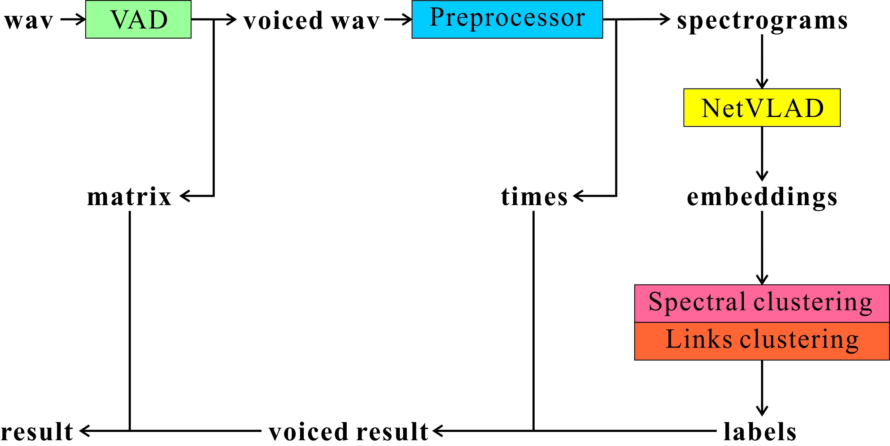
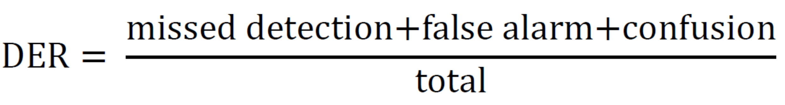
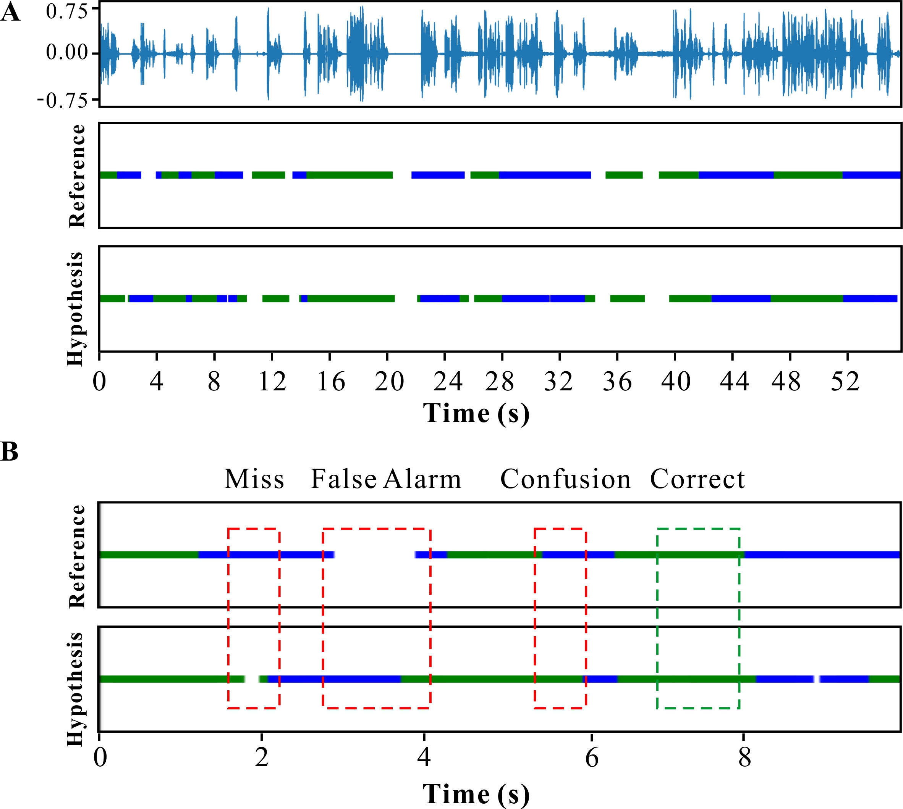
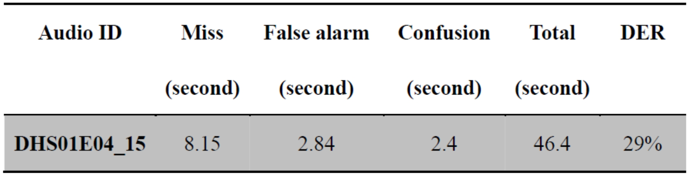
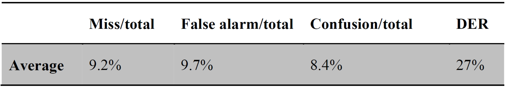
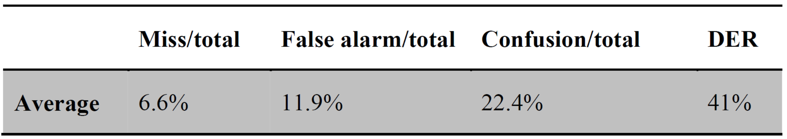

Project Description
Speaker recognizer is a system that recognizes and labels the speakers in an audio file or live stream. In addition to help save the audio data in well-structured way, it could improve the accuracy of acoustic speech recognition (ASR).
In this dissertation, we first use the voice activity detector (VAD) developed by Google to exclude the non-human speech. After we get the voiced audio data, we extract the spectrogram from the audio data via short-time Fourier transform (STFT) and then split the audio data into non-overlapping segments which contain 40 frames corresponding to 415ms which is also the resolution of speaker recognizer. Based on the spectrogram, we utilize the Net “Vector of Locally Aggregated Descriptors” (NetVLAD) embedding extraction technique to obtain the embeddings of each segment. Then we apply offline spectral clustering algorithm or online Links clustering algorithm to cluster the segments according to their embeddings and get the speaker label of each segment. Finally we use the pyannote.metrics python module to evaluate our system.
The diarization error rate (DER) of our offline speaker recognizer system is 27% and the percentage of the most important part Confusion is only 8.4% while the DER of our online speaker recognizer is 41% and the percentage of the Confusion part is 22.4%.
Design and construction of software system
In this section, we will first give a brief overview about our real-time and offline speaker recognizer including the overall workflow of our system.
Our system mainly consists of four components: voice activity detector (VAD), preprocessor, NetVLAD embedding extractor and spectral/Links clustering.

All the audio data are transformed to the wav format with the sampling rate 16000 Hz, mono channel as the system input. Then the VAD module will classify each frame of the audio data as speech or non-speech and concatenate all the speech frames into voiced wav data. In addition, it will produce a matrix to record all the non-speech frames timestamp.
Next, the voiced wav data will be processed by the preprocessor. The main functions of the preprocessor are (1) speech feature analysis which extracts the spectrogram from the audio data via short-time Fourier transform (STFT); (2) speech segmentation which splits the audio file into equal time-length non-overlapping segments. The preprocessor will produce the spectrograms and corresponding timestamps (times in Figure) of each segment one by one.
Based on the spectrogram of each segment, the embedding extractor will output the corresponding embedding via NetVLAD neural networks. The principle of NetVLAD is illustrated in dissertation section 3.3
We utilize two different clustering algorithms to cluster the audio segments based on their embeddings: (1) Links online clustering algorithm which means the speaker label is immediately emitted once the segment (or segment embedding) is available without seeing future segments; (2) Spectral offline clustering algorithm which means the speaker labels are produced after all the segments are available.
After we obtain the segment labels, we integrate these labels with the corresponding timestamp previously produced by preprocessor and produce the diarization result of the voiced audio data. Finally, combining the non-speech matrix produced by VAD, we can acquire the final diarization result.
Evaluation metrics
In this section, we illustrate the evaluation metrics which aims to evaluate our speaker recognizer system.
Diarization error rate (DER) is the most common and standard metric to evaluate the speaker recognizer system. DER consists of four components: missed detection, false alarm, overlap and confusion. Missed detection and false alarm are related with voice activity detector, while overlap is usually ignored in literature. Confusion part is the most important in DER which represents whether the label is right or not.
In this dissertation, we use pyannote.metrics python module to evaluate our system. pyannote.metrics is an open-source Python library which contains a large set of evaluation metrics which are available for diagnostic purposes of all modules of typical speaker diarization including speech activity detection, speaker change detection and clustering.
In pyannote.metrics python module, DER is defined as follows:
where missed detection is the time length of speech incorrectly classified as non-speech, false alarm is opposite which means the time length of non-speech incorrectly classified as speech, confusion is the time length of incorrect labeled segment and total is the total time length in the reference.
So far we manually labeled 16 video clips as our references. Then we use our speaker recognizer system to recognize the speaker in each clip and summarize all the information into a single figure as follows. We take DHS01E04_15 clip for example:
The Panel A of Figure consists of three parts: the upper part is the waveform of the video clip, the middle part is diarization result of the video clip which is labeled by ourselves manually as reference and the lower part is the predicted diarization result produced by our speaker recognizer system as hypothesis. In both reference and hypothesis, the lines with the same color correspond to the same speaker in each clip.
In the panel B, we take a small clip from the video between 0-10 second to illustrate the three main components of the DER (Miss, False Alarm and Confusion) and summarize the final result into the following table.
The total time of the video clip is 46.4 seconds. Missed detection, False alarm and Confusion time are 8.15 seconds, 2.84 seconds and 2.4 seconds respectively. Therefore the DER is (8.15+2.84+2.4)/46.4 = 29%.
Offline speaker diarization result
We use pyannote.metrics python module to evaluate our system. We manually labeled 38 video clips as reference and compare the predicted output by our speaker recognizer system as hypothesis.
We summarize the results and get the percentage of each component of DER in the following table.
In the table, we observe that the DER of offline speaker diarization system is 27%. The percentage of Missed detection and False alarm are 9.2% and 9.7%. These two parts contribute to 70% of the final DER. As we mentioned in Dissertation Section 6.2, these two parts are very closely related to VAD and segmentation. Also most teams exclude the Missed detection and False alarm parts and only report the Confusion part.
Therefore, the DER of our offline speaker recognizer system is 27% and the percentage of the most important part Confusion is only 8.4%. We believe our speaker recognizer is satisfactory and we will discuss the improvements of Missed detection and False Alarm parts in Dissertation Section 7.
Online speaker diarization result
We scan all the combinations of the similarity thresholds Tc, Ts and Tp and find the optimal ones based on the 27 video clips in the training set. The final total DER in the training set is 42%. Next step, we use this Links online clustering algorithm to analyze the next 5 video clips in the test set.
We summarize the results and get the percentage of each component of DER in the following table.
Because the VAD of online or offline speaker recognizer is same, the percentage of Miss and False alarm remains the similar value: offline 9.2% + 9.7% = 18.9%, online 6.6% + 11.9% = 18.5%. We calculate 38 video clips results in offline result and 5 video clips in online result which can explains the slightly different in Missed detection part and False Alarm part. The DER of test set is 41% and the percentage of the confusion part is 22.4%. Both of them are higher than the ones of the offline speaker recognizer.
Therefore, we believe that the accuracy of the offline speaker recognizer is better than online speaker recognizer while online speaker recognizer can be transformed into real-time speaker recognizer easily which is a big advantage.
Conclusion
- In this dissertation, we combine WebrtcVAD voice activity detector, NetVLAD Audio embedding extraction technique, Spectral clustering and Links clustering algorithm to build our offline and online speaker recognizer
- Offline speaker recognizer: DER is 27%; Percentage of Confusion is only 8.4%.
- Online speaker recognizer: DER is 41%; Percentage of Confusion is 22.4%.
- The offline speaker recognizer outperforms the online speaker recognizer.
- Online speaker recognizer can be real-time which is a big advantage.